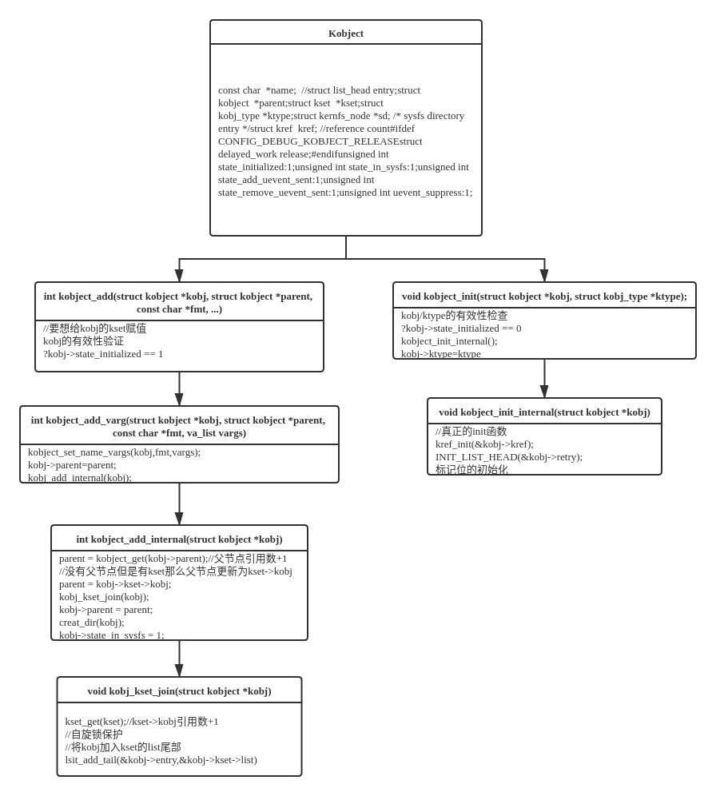
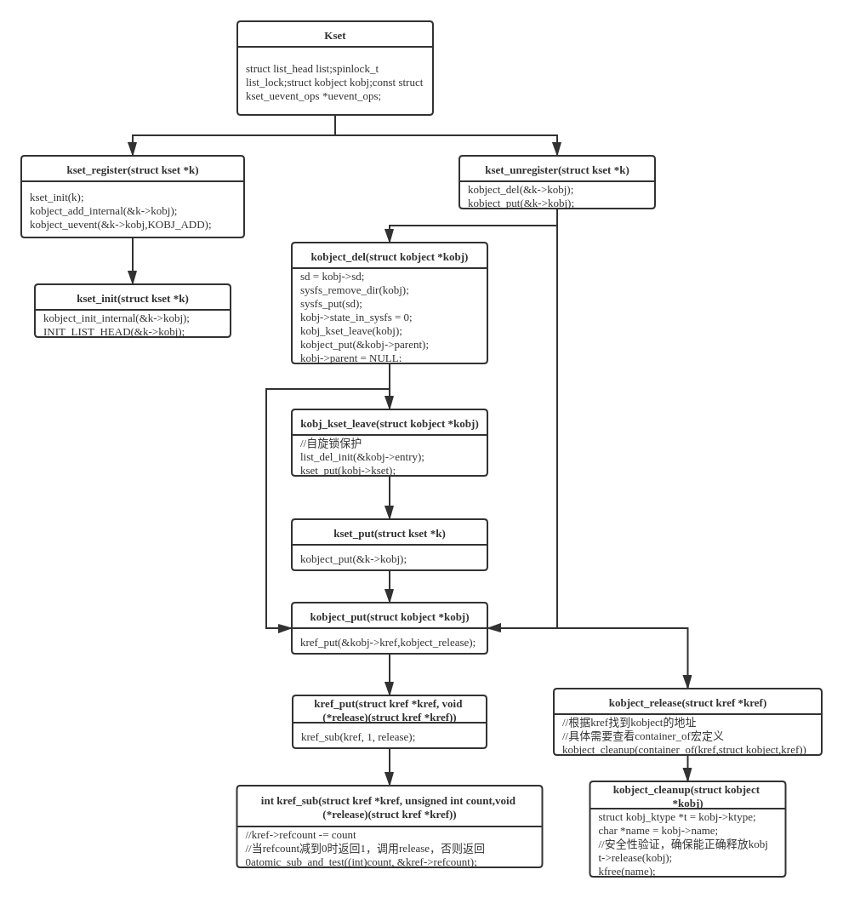
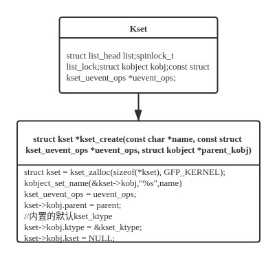

Kobject
Foreword
Linux设备模型的核心是使用Bus、Class、Device、Driver四个核心数据结构，将大量的、不同功能的硬件设备抽象并以树状结构进行管理。但是硬件设备繁多，每一个都描述成一个对应的结构体将产生大量的代码冗余，因此Linux参考面向对象程序设计思想，将设备模型数据结构中可能相同的部分单独抽象出来统一实现——Kobject。
- Kobject不会单独出现，通常内嵌在大型数据结构中，为其提供一些底层的功能实现
- 驱动开发者通常很少使用Kobject以及它提供的接口，而是使用构建在Kobject上的设备模型接口
Kobject & Kset & Ktype

Kobject
/*
state_initialized，指示该Kobject是否已经初始化，以在Kobject的Init，Put，Add等操作时进行异常校验。
state_in_sysfs，指示该Kobject是否已在sysfs中呈现，以便在自动注销时从sysfs中移除。
state_add_uevent_sent/state_remove_uevent_sent，记录是否已经向用户空间发送ADD uevent，如果有，且没有发送remove uevent，则在自动注销时，补发REMOVE uevent，以便让用户空间正确处理。
uevent_suppress，如果该字段为1，则表示忽略所有上报的uevent事件。
Uevent提供了“用户空间通知”的功能实现，通过该功能，当内核中有Kobject的增加、删除、修改等动作时，会通知用户空间。
*/
struct kobject {
const char *name; //
struct list_head entry;
struct kobject *parent;
struct kset *kset;
struct kobj_type *ktype;
struct kernfs_node *sd; /* sysfs directory entry */
struct kref kref; //reference count
#ifdef CONFIG_DEBUG_KOBJECT_RELEASE
struct delayed_work release;
#endif
unsigned int state_initialized:1;
unsigned int state_in_sysfs:1;
unsigned int state_add_uevent_sent:1;
unsigned int state_remove_uevent_sent:1;
unsigned int uevent_suppress:1;
};
entry：用于将Kobject加入Kset中的list_headparent：指向父节点，以此形成层次结构。如果当前kobject没有指定parent，但是又有kset，那么parent将会指向kset，如果两者都没有，那么kobject将作为根节点kset：kobject所属的kset，可以为NULL。ktype：kobject的ktype，没有会报错sd：该kobject在sysfs中的目录入口kref：kobject的引用计数器
Kset
struct kset {
struct list_head list;
spinlock_t list_lock;
struct kobject kobj;
const struct kset_uevent_ops *uevent_ops;
};
list/list_lock：用于保存该kset下所有的kobject的链表。kobj：该kset自己的kobject（kset是一个特殊的kobject，也会在sysfs中以目录的形式体现）。uevent_ops：该kset的uevent操作函数集。当任何kobject需要上报uevent时，都要调用它所从属的kset uevent_ops，添加环境变量，或者过滤event（kset可以决定哪些event可以上报）。因此，如果一个kobject不属于任何kset时，是不允许发送uevent的。
Ktype
struct kobj_type {
void (*release)(struct kobject *kobj);
const struct sysfs_ops *sysfs_ops;
struct attribute **default_attrs;
const struct kobj_ns_type_operations *(*child_ns_type)(struct kobject *kobj);
const void *(*namespace)(struct kobject *kobj);
};
- release：通过该回调函数，可以将包含该种类型kobject的数据结构的内存空间释放掉。
- sysfs_ops：该种类型的Kobject的sysfs文件系统接口。
- default_attrs：该种类型的Kobject的atrribute列表（所谓attribute，就是sysfs文件系统中的文件）。将会在Kobject添加到内核时，一并注册到sysfs中。
- child_ns_type/namespace：和文件系统（sysfs）的命名空间有关，这里不再详细说明。
Kobject初始化
kmalloc分配
- 通常随上层数据结构一同分配并在初始化后添加到kernel
- 这种方式分配的kobject，会在引用计数变为0时，由kobject_put调用其ktype的release接口，释放内存空间

kobject_create(void)分配
- kobject_create内置了一个的默认的ktype（dynamic_kobj_ktype）用于在refcount = 0时释放空间

Kset的初始化和注册
kset_init(struct kset *kset)
- 用于初始化已分配的kset（通常使用kmalloc随上层数据结构一同分配），kset->kobject->ktype必须有上层数据结构提供
- kset是一个特殊的kobject，因此kset的初始化会调用kobject的初始化接口

kset_create_and_add()
- 调用kset_create()动态申请一个kset并register

Kobject和Kset
Kset和Kobject的关系

Kset和Kobject的层次结构
Kset和Kobject通过list_head这个链表链接在一起，list_head是一个双向链表，同一kset下的kobject被组织成一个双向循环链表，其中kset的struct list_head list是链表的表头，kset下的kobject中的struct list_head entry是list中的一个节点，kset和kobject之间的包含关系实际上是一层层的循环链表的交织，对应/sys/目录下的一层层目录或文件12。

kset(/sys/bus)
+--------+
| kobj |
| |
+--------+
| list |
+------------+--------+
|
|
| /sys/bus/pci
v +--------+
/sys/bus/term1 /sys/bus/term2| |
+--------+ +--------+ | kobj |
| | | +--->+ |
| kobj +---->+ kobj | +--------+
| | | | | list |
+--------+ +--------+ +---+----+
|
v
/sys/bus/pci/term3
+--------+
| kobj |
+--------+
1. kobject可以通过parent指针（或kset指针）直接找到上层节点（或kset），类比cd指令可以要返回上层目录只需要cd .. ↩
2. 而要从上层访问指定的kobject，必须要有完整的节点地址，类比cd指令要进入制定目录需要使用完整的路径（相对路径需要准确的目录名） ↩